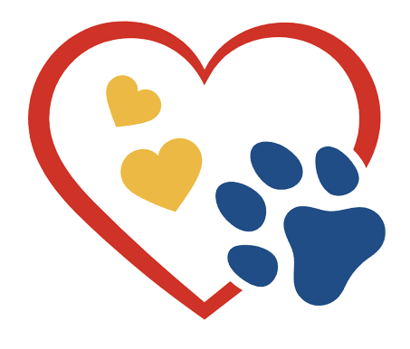
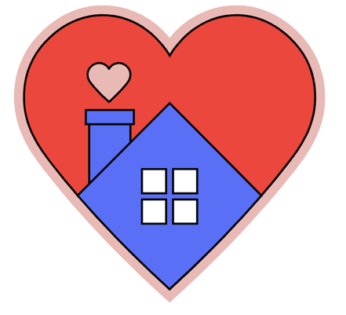

We are Rescue Waggin'
A dog loving organization dedicated to the rescue, rehabilitation, and re-homing of dogs in need.
We are Rescue Waggin'
A dog loving organization dedicated to the rescue, rehabilitation, and re-homing of dogs in need.
Our MissionAt Rescue Waggin', we believe that every dog deserves a second chance at a happy, loving home. Our mission is simple yet profound: to rescue, rehabilitate, and rehome dogs in need, creating heartwarming tales of transformation and wagging tails that inspire hope and bring joy to both dogs and the people who adopt them. |
What We DoOur dedicated team of animal lovers works tirelessly to rescue dogs from a variety of situations, providing them with the care and attention they deserve. We nurse them back to health, both physically and emotionally, ensuring that they are ready for their forever homes. Our commitment to positive training and socialization ensures that each dog is well-prepared for a new life filled with love and companionship. |
Our Impact
|

Over 2,000 dogs have been rescued |
We recieve over 20 calls per week about dogs in need |

Over 1,500 dogs re-homed |
Why Choose Rescue Waggin' When you adopt from Rescue Waggin, you're not just giving a dog a home; you're giving
them a second chance at a life filled with happiness and security. We take pride in matching
dogs with families, making sure it's a perfect fit for both. Our goal is to create countless
heartwarming stories of wagging tails and lifelong bonds. |
Our Story
The story of Rescue Waggin is a tapestry woven from the life experiences and unwavering dedication of our four remarkable founders: Teddy Schneider, Lindsay Garfinkel, Mehr Dewan, and Lucas Rosa de Souza.
- Teddy has been a passionate advocate for dogs since he grew up in a home filled with rescue dogs and he formed profound bonds with them. His extraordinary rescue story of his own pup, Fido, inspired him to take action. For Teddy, every dog deserves a hero, and he decided to be that hero for as many as he could.
- Lindsay is a skilled veterinary technician and she has seen countless dogs suffering from neglect and abandonment. One night, she stumbled upon a shivering, malnourished pup outside her apartment. She named him Scout, and nursed him back to health with her nursing skills and unwavering love. The experience ignited a fire within Lindsay to make a difference in the lives of dogs like Scout, who deserved better.
- Mehr has a background in law had volunteered at local animal shelters for years before starting Resuce Waggin'. She came across numerous cases where legal hurdles hindered the rescue process. Her legal expertise, combined with a heart full of love for dogs, compelled her to co-found Rescue Waggin. She was determined to navigate the complex world of animal welfare regulations and ensure dogs in need could find refuge without obstacles.
- Lucas, an experienced dog trainer, had dedicated his life to helping dogs overcome behavioral issues and find loving homes. His dream was to create a shelter where dogs not only received love but also expert training, ensuring a seamless transition to their forever homes.
Get Involved
You can be a part of our journey by adopting a dog, volunteering, donating, or simply spreading
the word about Rescue Waggin. Together, we can make a significant impact on the lives of these
incredible animals.
Thank you for visiting Rescue Waggin, where every visit, every
click, and every adoption makes a difference. Together, we can change lives, one waggin' tail at a time.